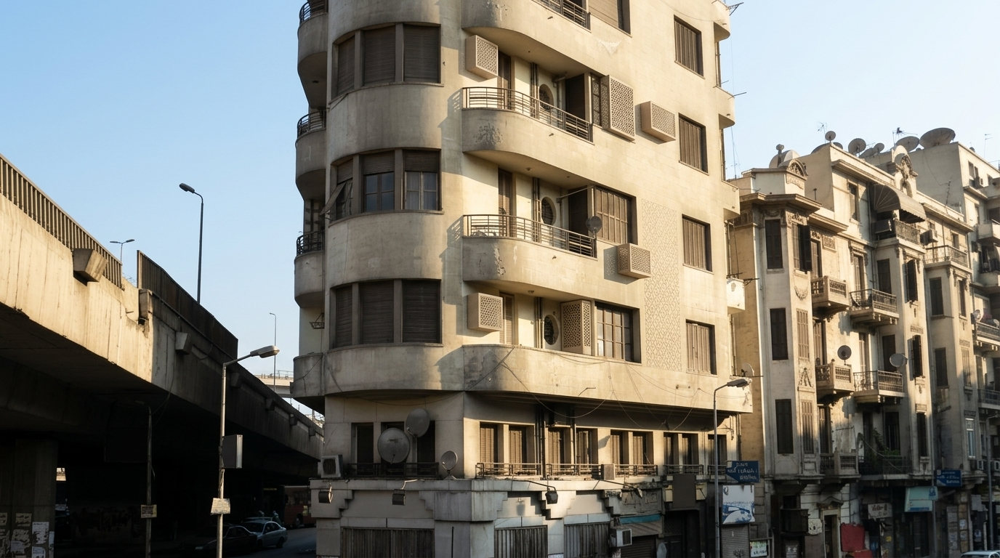
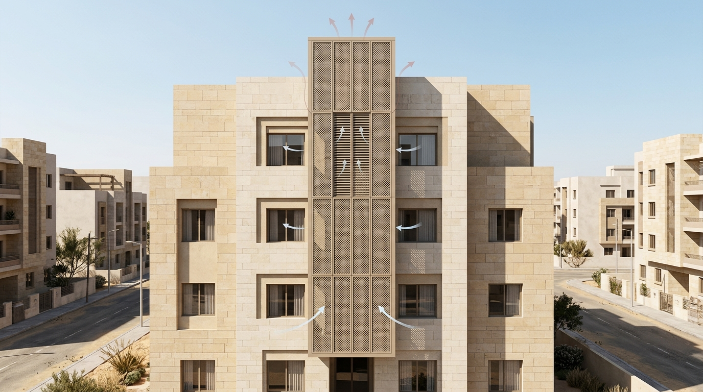
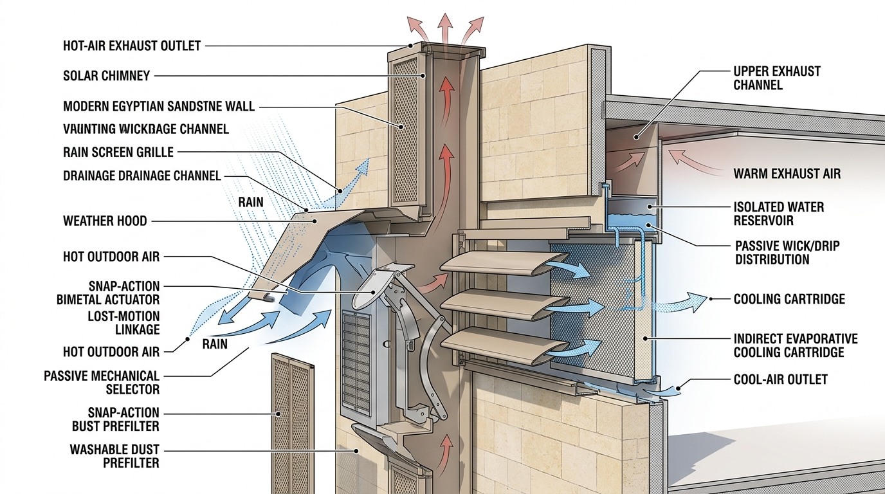
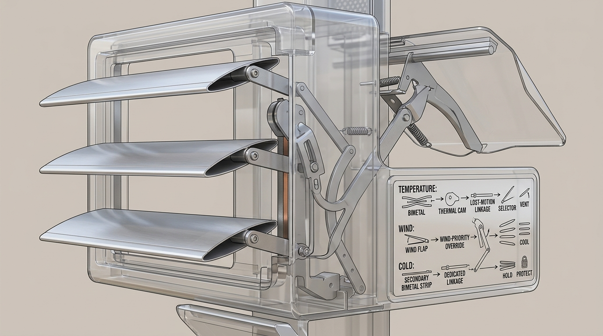
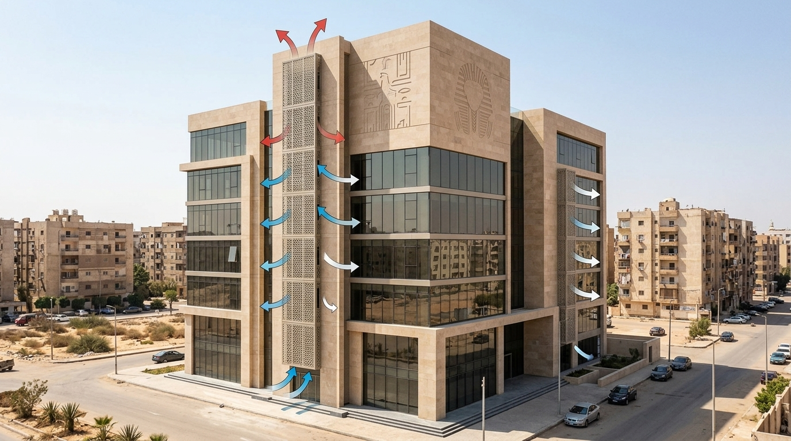
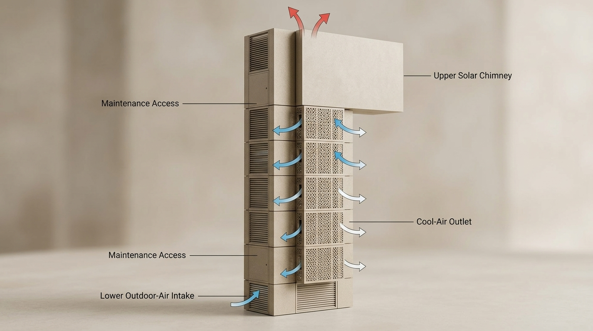

01 / UNIT MODULE
APARTMENTS
Compact independently deployable modules for individual apartments or defined ventilation zones.
COMPACT RETROFIT

A mechanically adaptive passive building skin designed for hot Egyptian climates.
Egyptian buildings face long periods of high outdoor temperature, dust exposure and variable wind conditions.
SEB-Skin explores a passive alternative: a building-integrated system that combines solar-driven buoyancy, indirect evaporative pre-cooling and mechanical climate adaptation.
The system is designed to operate without fans, motors, batteries, sensors or electronic control.
Environmental conditions mechanically determine the airflow configuration.
Natural ventilation configuration under moderate temperature and low wind conditions.
The supply-air and exhaust-air paths remain physically separated.

Hot ambient air enters through a weather-protected intake.
A washable passive prefilter provides initial particle protection.
Temperature and wind mechanically determine the airflow state.
Air is pre-cooled while cooling water remains separated from the supply stream.
Conditioned air is directed toward the indoor space.
Solar-heated exhaust rises through the upper chimney by buoyancy.
Environmental inputs are translated into mechanical motion.

Wind-priority override with lost-motion thermal bypass prevents continuous thermal-actuator loading during high-wind protection.
Physics-based engineering model under representative conditions.
Wind enters PROTECT at 5.0 m/s and releases below 3.5 m/s.
COOL activates at 35°C and releases at 32°C.
HOLD ≤15°C is a provisional design set-point requiring future climate validation.
The indirect evaporative cooling cartridge pre-cools incoming air without directly adding evaporated water to the indoor supply stream.
A small gravity-fed reservoir supplies water through passive wicking or drip distribution. Periodic manual refill is required.
SEB-Skin adapts its physical scale to the building.

Compact independently deployable modules for individual apartments or defined ventilation zones.
Larger vertical Climate Spine configurations can serve multiple rooms, floors or ventilation zones.

Medium-to-large integrated modules for institutionally managed buildings.

The outer grille uses a contemporary geometric language inspired by the functional logic of Mashrabiya rather than copying traditional ornament.
The result is intended to read as part of the building envelope — not as an external air-conditioning unit.
No physical prototype has been experimentally validated at this stage.
IEC performance depends strongly on relative humidity.
Water consumption is an explicit operational trade-off.
Smaller modules have lower solar-chimney buoyancy potential because of their shorter chimney height.
Final actuator torque, mechanical interference and HOLD-state behavior require future validation.
SEB-Skin transforms passive building elements into a mechanically adaptive building skin for hot Egyptian climates.
NEXT DEVELOPMENT STAGE: EXPERIMENTAL VALIDATION